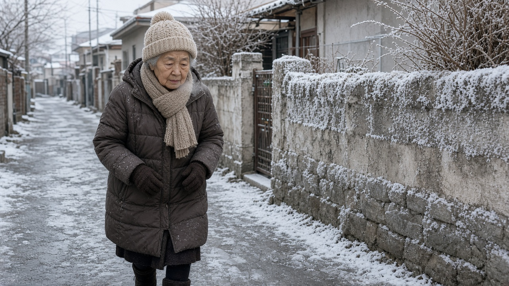
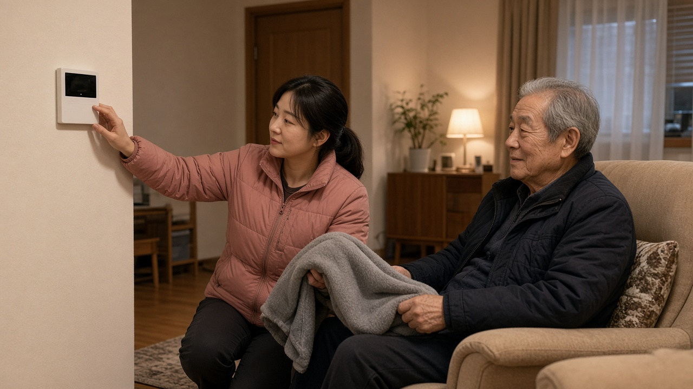
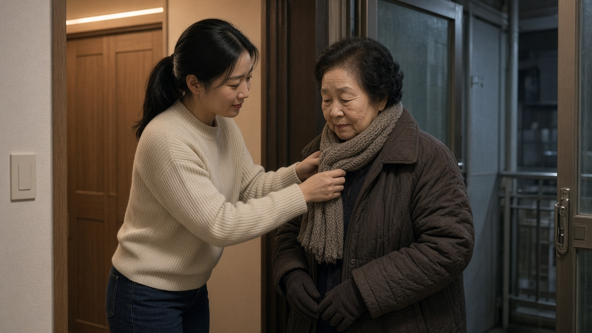

어르신 한랭질환 지난겨울 364명으로 늘었어요, 낙상 치료비 지원과 한파특보 때 안부 확인 정리

부모님이 혼자 지내시면 날이 갑자기 추워지는 아침마다 괜히 전화를 한 번 더 걸게 되죠.
지난겨울은 평년보다 따뜻했는데도 추위 때문에 응급실을 찾은 사람이 오히려 늘었다는 집계가 나왔어요.
보건복지부가 11월 10일 국무회의에서 2026년부터 2027년 겨울철 취약계층 보호대책을 보고했고, 그 안에 어르신 한랭질환과 낙상에 관한 내용이 꽤 구체적으로 담겼어요.
지난겨울 숫자가 무엇을 말해 주는지, 올겨울 어떤 지원이 새로 생기는지, 집에서는 무엇을 챙기면 좋을지 차례로 정리해 볼게요.
따뜻한 겨울이었는데 한랭질환자는 늘었어요
한랭질환은 추위가 직접 원인이 되어 몸에 피해를 주는 질환으로, 저체온증과 동상, 동창이 대표적이에요.
정부 자료를 보면 지난겨울 전국 평균기온은 1.1도로 평년 0.5도보다 높았어요.
그런데 한랭질환자는 그 전 겨울 334명에서 364명으로 늘었고, 추정 사망자는 8명에서 14명으로 1.75배가 됐어요.
특히 환자의 57.4퍼센트인 209명, 사망자 14명 가운데 11명이 65세 이상이었어요.
사망자 중 5명은 치매 같은 인지장애가 있었고요.
결국 겨울 평균 날씨보다 난방이 충분한지, 추위를 스스로 알아차리고 피할 수 있는지가 더 큰 차이를 만든다는 뜻으로 읽을 수 있어요.

집 앞 길가와 집 안에서도 생겨요
한랭질환이라고 하면 산이나 스키장을 떠올리기 쉬운데, 실제 발생 장소는 훨씬 가까운 곳이었어요.
지난겨울 발생 장소는 길가가 23.6퍼센트로 가장 많았고, 주거지 주변 19.8퍼센트, 집 17.0퍼센트 순이었어요.
질병관리청 분석에서는 전년도 한랭질환자의 21.3퍼센트가 술을 마신 상태였다고 해요.
술을 마시면 체온이 떨어지는 걸 잘 느끼지 못하기 때문에 늦은 밤 귀갓길이 특히 위험할 수 있어요.
질병관리청은 매년 12월 1일부터 다음 해 2월 28일까지 전국 약 500개 응급실과 함께 한랭질환 응급실감시체계를 운영하고, 신고 현황을 누리집에 매일 올려요.
한파가 이어지는 날에는 이 현황을 한 번씩 확인해 보면 우리 지역 상황을 가늠하는 데 도움이 돼요.
내년 1분기부터 낙상사고 치료비와 회복비 지원
이번 대책에서 새로 생기는 지원이 어르신 낙상사고 치료·회복비예요.
겨울철 빙판길에서 넘어져 생기는 타박상이나 골절 치료비 부담을 덜어 주려는 것으로, 내년 1분기부터 취약어르신 56만 6천 명을 대상으로 시행할 계획이에요.
재원은 보험업권 상생기금 25억 원이에요.
대상은 65세 이상 기초생활수급자, 차상위계층 또는 기초연금 수급자 가운데 돌봄이 필요한 어르신이에요.
다만 지원 금액과 신청 방법은 아직 세부 내용이 발표되지 않았어요.
부모님이 노인맞춤돌봄서비스를 받고 계시다면 담당 생활지원사나 주민센터에 시행 시기를 미리 물어 두는 게 좋아요.

한파특보가 내리면 매일 안부를 확인해요
대설·한파 대책기간은 11월 15일부터 내년 3월 15일까지예요.
평소에는 생활지원사 약 3만 7천 명이 주 1회 방문과 주 2회 전화로 어르신 안전을 확인하고, 한파특보가 발령되면 거동이 불편한 고위험 어르신은 매일 1회 이상 전화나 방문으로 안부를 확인해요.
혼자 사는 어르신과 장애인 약 27만 8천 가구에는 화재감지기와 응급호출기를 이용한 응급안전안심서비스를 제공하고, 낡은 장비 약 9만 대도 바꿔요.
인공지능 스피커 약 4천 대로 기온과 한파 위험, 행동요령을 하루 세 번 음성과 화면으로 알려 주고, 치매 어르신에게는 인식표와 배회감지 서비스를 지원해요.
보건소 방문건강관리 대상자 가운데 오늘건강 앱을 쓰는 분에게는 11월부터 사는 지역의 한파 위험 정보가 그림으로 자동 발송돼요.
가족이 함께 챙기면 좋은 겨울 습관
정부 대책과 별개로 집에서 할 수 있는 일은 생각보다 단순해요.
질병관리청은 따뜻한 옷을 겹쳐 입고 체온을 유지하며, 오래 밖에 있을 때는 충분히 쉬라고 당부하고 있어요.
추운 날 술을 마신 뒤에는 밖에 오래 머물지 않도록 하고, 치매가 있는 어르신은 혼자 외출하지 않도록 살펴 주세요.
가까운 곳에서 추위를 피할 수 있도록 전국에 한파쉼터 6만 4천 곳이 운영되고, 한파특보 때는 읍면동마다 최소 한 곳 이상이 밤 10시까지 문을 열어요.
도움이 필요한 이웃이 보이면 가까운 행정복지센터나 129 보건복지상담센터, 복지위기 알림 앱으로 알려 주시면 돼요.
몸이 떨리거나 말이 어눌해지는 등 저체온증이 의심되면 따뜻한 곳으로 옮기고 바로 119에 도움을 요청하는 것이 먼저예요.
참고 자료 보건복지부 2026년 11월 10일 보도자료 2026년부터 2027년 겨울철 취약계층 보호대책, 질병관리청 한랭질환 응급실감시체계 개요와 신고현황 www.kdca.go.kr
태그 한랭질환 저체온증 어르신건강 낙상사고 겨울철취약계층 한파특보 노인맞춤돌봄 응급안전안심서비스 한파쉼터 질병관리청